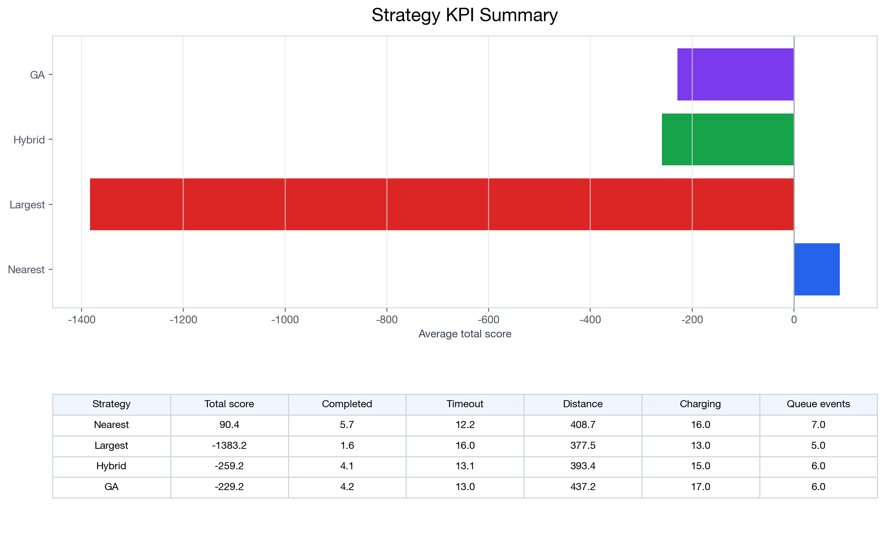
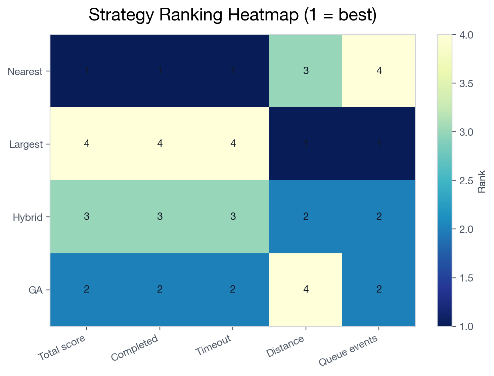
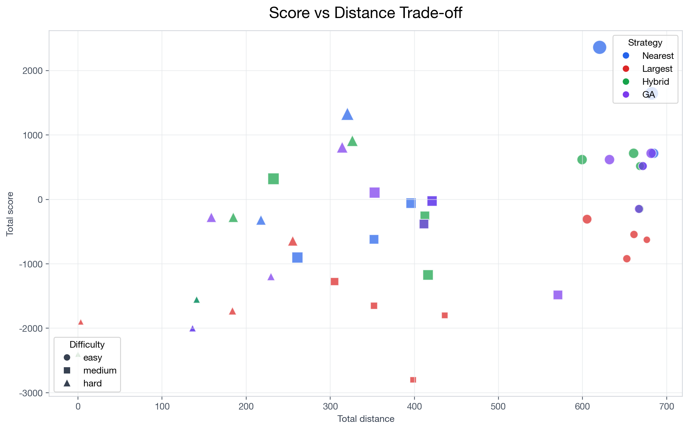
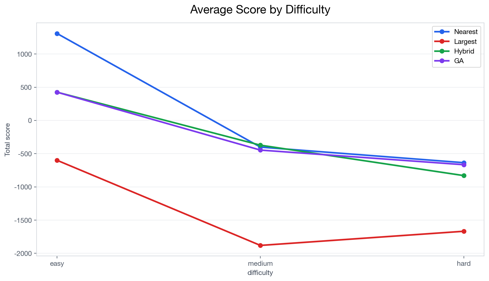
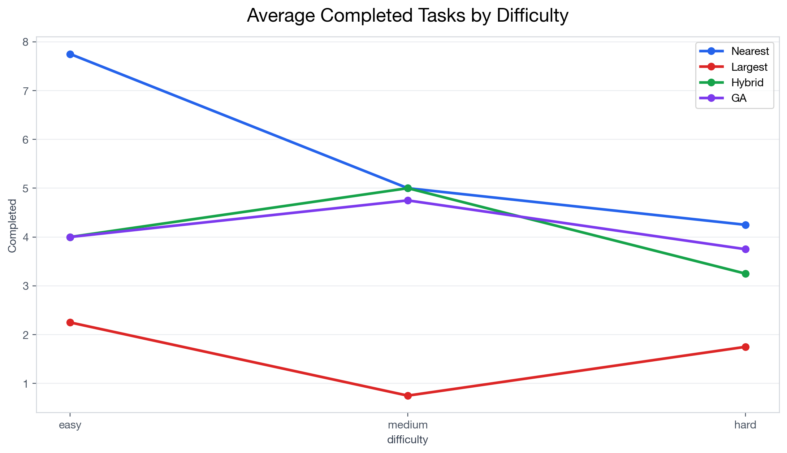
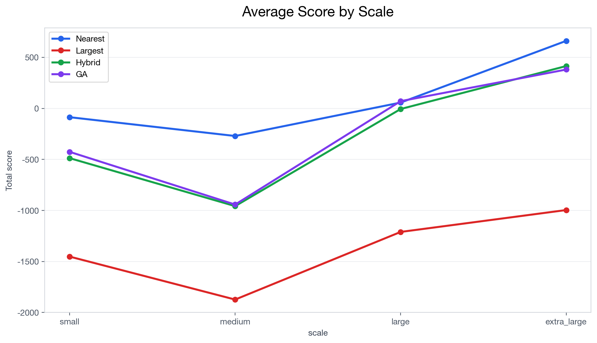
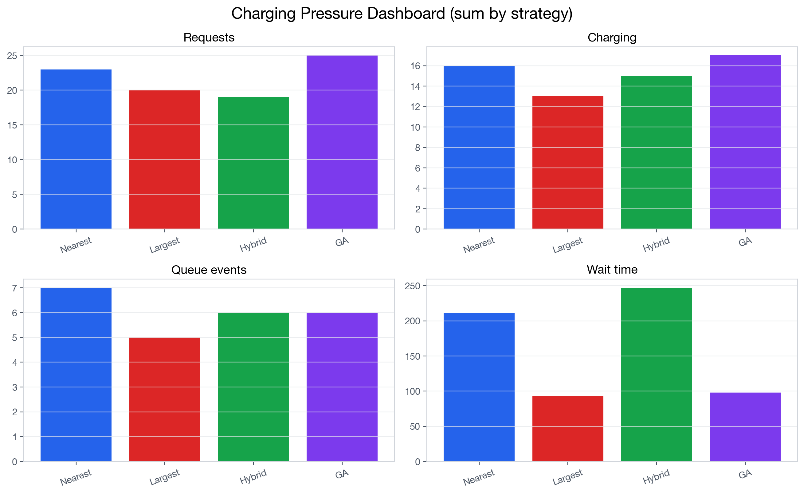
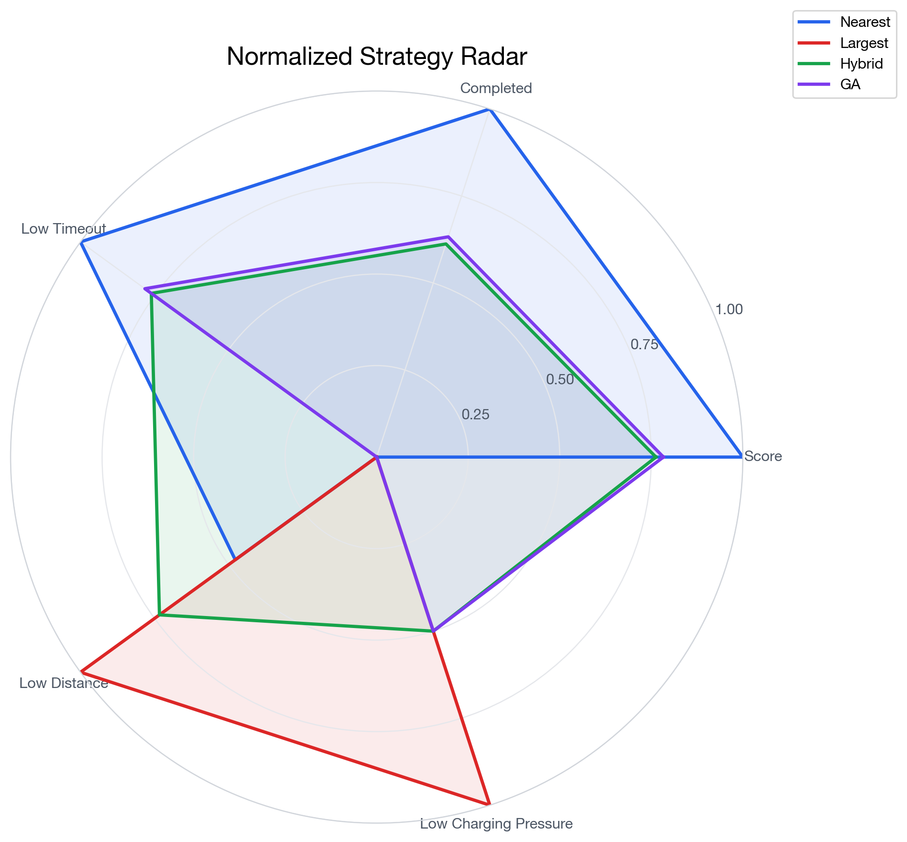
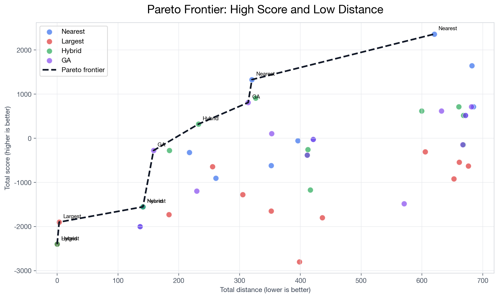

新能源物流车队协同调度实验分析
本页面由 visualization/advanced_analysis.py 自动生成，用于报告和答辩展示。
策略 KPI 汇总表
| strategy | total_score | completed_tasks | timeout_tasks | total_distance | charging_times | charging_requests | charging_queue_events | max_queue_length | total_charging_wait_time | strategy_label |
|---|---|---|---|---|---|---|---|---|---|---|
| nearest | 90.45 | 5.67 | 12.17 | 408.72 | 16 | 23 | 7 | 4 | 211.0 | Nearest |
| largest | -1383.21 | 1.58 | 16.00 | 377.51 | 13 | 20 | 5 | 2 | 93.0 | Largest |
| energy_aware_hybrid | -259.24 | 4.08 | 13.08 | 393.43 | 15 | 19 | 6 | 4 | 247.0 | Hybrid |
| genetic_algorithm | -229.21 | 4.17 | 13.00 | 437.24 | 17 | 25 | 6 | 3 | 98.0 | GA |
KPI summary by strategy

每个策略的核心 KPI 汇总：收益、完成数、超时数和里程使用平均值；充电请求、充电次数、排队事件和等待时间使用合计值；最大队列长度使用该策略所有实验中的最大值。
Ranking heatmap

按策略聚合后的指标排名，1 表示最好。收益和完成数越大越好；超时、里程和排队事件越小越好。
Score-distance trade-off

每个点代表一组实验；横轴为总里程，纵轴为总得分，颜色表示策略，点形状表示难度，点大小表示完成任务数。
Difficulty trend

按 easy -> medium -> hard 顺序展示各策略平均总得分随难度变化的趋势。
Difficulty completion trend

按 easy -> medium -> hard 顺序展示各策略平均完成任务数随难度变化的趋势。
Scale trend

按 small -> medium -> large -> extra_large 顺序展示各策略平均总得分随规模变化的趋势。
Charging pressure dashboard

充电压力指标按策略合计：Requests 来自 charging_requests，Charging 来自 charging_times，Queue events 来自 charging_queue_events，Wait time 来自 total_charging_wait_time。
Normalized radar chart

所有指标归一化到 0-1，数值越大代表表现越好；Low Timeout、Low Distance 和 Low Charging Pressure 已做反向归一化。
Pareto frontier

Pareto 前沿表示没有被其他实验同时以更高得分和更低里程支配的结果点。